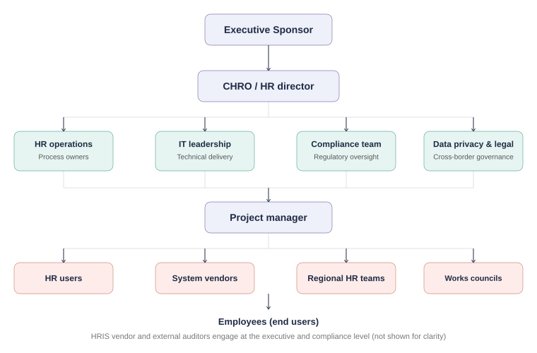
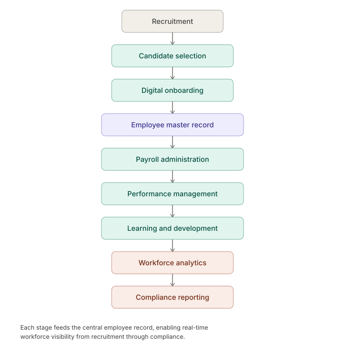

Synergy Enterprises
Enterprise HR Transformation; HRIS Modernization Strategy
Applied Business Case Study — 10Alytics Business Analysis Program
Prepared by Doris Frank, Business Analyst (Lead)
Domain: Manufacturing / FMCG; HR Technology Transformation
Methodology: Business Case Development; Stakeholder Analysis; Process Design; Cost–Benefit Analysis
Tools: Business Case Template, RACI Matrix, Stakeholder Power; Interest Matrix, Process Flow Mapping
Project overview
Synergy Enterprises is a multinational FMCG manufacturer operating across five continents with a workforce exceeding 75,000 employees. As part of an applied business analysis case study, I evaluated Synergy's fragmented HR technology landscape and developed a strategic business case to support enterprise-wide HR transformation.
The engagement followed a full consulting lifecycle: problem diagnosis, stakeholder analysis, options evaluation, financial justification, risk assessment, and a phased transformation roadmap; culminating in a board-ready business case and a complete set of supporting business analysis artifacts.
Objective: Assess Synergy's HR technology modernization options and build a financially justified roadmap for migrating to a centralized, cloud-based Human Resource Information System (HRIS).
Business challenge
Synergy’s HR function had grown organically across regions for decades, resulting in a patchwork of disconnected systems; legacy on-premise platforms in some markets, disparate cloud tools in others, and manual spreadsheets filling the gaps. This fragmentation created compounding risk across the business:
| Challenge | Business impact |
|---|---|
| Fragmented employee data | No single source of truth; duplicated records; no global workforce view |
| Inefficient HR operations | Manual onboarding, reviews, and reporting create overhead and error |
| Limited workforce analytics | Inconsistent data blocks global reporting on talent, diversity, and planning |
| Inconsistent employee experience | Varying HR processes by region erode the global employer brand |
| Compliance & data privacy risk | Disparate systems make global labor law compliance difficult to govern |
| High IT maintenance cost | Multiple legacy systems consume disproportionate IT budget |
These issues directly threatened Synergy’s stated strategic priorities: building a consistent global brand, strengthening customer and employee relationships, and attracting and retaining talent at scale.
Stakeholder analysis
A structured stakeholder analysis was conducted to map influence, interest, and engagement strategy across the transformation.
Stakeholder register
| Stakeholder | Role | Interest | Influence |
|---|---|---|---|
| CEO | Executive Sponsor | High | High |
| CHRO | Business Owner | High | High |
| CIO | Technology Sponsor | High | High |
| HR Operations Team | Process Owners | High | Medium |
| IT Team | Technical Delivery | High | High |
| Compliance Team | Regulatory Oversight | High | Medium |
| Regional HR Managers | Business Users | Medium | Medium |
| Employees | End Users | Medium | Low |
| HRIS Vendor | Solution Provider | Medium | Medium |
| Regional Works Councils / Employee Representatives | Labor & Regulatory Liaison | High | Medium |
| Data Privacy & Legal Compliance Officer | Cross-Border Data Governance | High | Medium |
Note: rows above represent stakeholder categories, not individual employees. Given Synergy's scale (75,000+ employees across five continents), each row reflects a functional or regional group rather than a single point of contact — consistent with standard practice for an enterprise-level stakeholder register.
Stakeholder map

Stakeholder power–interest matrix
| Low interest | High interest | |
|---|---|---|
| High power | Keep satisfied — Board Members, External Auditors | Manage closely — CEO, CHRO, CIO, Executive Sponsor |
| Low power | Monitor — External Applicants | Keep informed — HR Teams, Regional Managers, Employees |
This matrix shaped the engagement strategy throughout; executive sponsors received decision-focused briefings, while operational stakeholders were kept informed through change management touchpoints to manage adoption risk.
Solution analysis
Three strategic alternatives were evaluated against operational impact, cost, scalability, and risk.
| Option | Description | Benefits | Limitations |
|---|---|---|---|
| 1. Status quo | Maintain existing fragmented systems | No disruption; minimal short-term cost | Continued inefficiency; growing compliance exposure |
| 2. Partial integration | Connect existing systems via middleware | Moderate improvement; lower upfront investment | Still dependent on legacy platforms; limited scalability |
| 3. Enterprise HRIS transformation (recommended) | Implement a centralized cloud-based HRIS | Single source of truth; improved compliance and visibility | Highest upfront investment; requires structured change management |
Recommendation: Option (3); Enterprise HRIS Transformation. While it carries the highest initial cost, it is the only option that resolves the structural root cause (data fragmentation) rather than managing around it, and the only option that scales with Synergy’s continued global growth.
Current-state vs Future-state architecture
The recommended HRIS would centralize and standardize the full employee lifecycle: recruitment, onboarding, payroll, performance management, workforce analytics, compliance monitoring, employee self-service, and workforce planning.

Future-state process flow

Requirements overview
Business requirements
- Centralize workforce data globally
- Improve HR reporting and visibility
- Standardize HR processes across regions
- Strengthen compliance controls
Functional requirements
- Recruitment management
- Onboarding workflows
- Payroll administration
- Performance management
- Reporting dashboards
Non-functional requirements
- Security
- Scalability
- Availability
- Regulatory compliance
- Data privacy
Cost–benefit analysis
The financial assessment confirmed that while Enterprise HRIS Transformation requires the highest upfront investment of the three options, it delivers the strongest long-term value relative to cost.
Projected outcomes of the recommended solution:
- ~25% improvement in HR operational efficiency
- Projected $5M in annual savings within three years
- Improved workforce visibility and reporting accuracy
- Enhanced employee satisfaction
- Reduced compliance and governance risk exposure
These figures represent the business case’s projected outcomes based on the options analysis, not third-party-audited results.
RACI matrix
| Activity | CEO | CHRO | PM | IT | HR Team | Vendor |
|---|---|---|---|---|---|---|
| Business case approval | A | R | C | I | I | I |
| Requirements gathering | I | A | R | C | R | I |
| Solution design | I | C | A | R | C | R |
| Configuration | I | I | A | R | C | R |
| Data migration | I | C | A | R | C | R |
| UAT | I | A | R | C | R | C |
| Training | I | A | R | C | R | C |
| Go-live | A | R | R | R | C | C |
R = Responsible · A = Accountable · C = Consulted · I = Informed
Risk assessment & mitigation
| Risk | Mitigation |
|---|---|
| Change resistance | Stakeholder engagement and structured training |
| Data migration errors | Validation checkpoints and phased migration |
| Operational disruption | Pilot deployment and phased rollout |
| Budget overruns | Governance reviews and cost controls |
| Security & compliance risk | Audits, access controls, and encryption |
Benefits realization framework
Translating the transformation into business outcomes and strategic value:
Business outcomes
- ~25% operational efficiency improvement
- Projected $5M annual savings
- Improved workforce visibility
- Enhanced compliance management
- Reduced manual processes
- Better employee experience
Strategic value
- Stronger executive decision-making
- Stronger governance
- Scalable HR operations
- Long-term digital transformation foundation
Business impact
This engagement gave executive leadership a structured decision framework for evaluating enterprise-wide HR transformation. The analysis enabled stakeholders to assess modernization options objectively, understand financial and operational trade-offs, identify transformation risks early, establish a clear modernization roadmap, and align workforce strategy with long-term business objectives.
By converting a fragmented HR operating environment into a structured, financially justified transformation roadmap, this business case supports the kind of informed decision-making, governance, and sustainable growth that an HR transformation of this scale requires.
Implementation plan
The transformation is phased across four stages to manage risk, protect business continuity, and build organizational confidence before full global rollout.
| Phase | Focus | Key activities | Indicative duration |
|---|---|---|---|
| 1. Foundation | Governance & design | Finalize requirements, select HRIS vendor, confirm data governance and security model | Months 1–3 |
| 2. Pilot | Controlled rollout | Deploy to one region, migrate a representative data subset, run parallel operations | Months 4–6 |
| 3. Phased global rollout | Scaled deployment | Roll out region by region, complete data migration, deliver localized training | Months 7–12 |
| 4. Stabilization | Adoption & optimization | Monitor adoption, resolve post-go-live issues, retire legacy systems, measure benefits realization | Months 13–15 |
Key personnel accountable for delivery are defined in the RACI matrix above. Each phase ends with a governance checkpoint where the Project Manager and CHRO confirm readiness to proceed, in line with the risk mitigations defined earlier in this case study.
SDLC methodology recommendation
Given the scale and risk profile of this transformation, an Agile (iterative, phased) methodology is recommended over a traditional Waterfall approach, for the following reasons:
- Regional complexity demands iteration. Synergy operates across five continents with varying local labor laws and HR practices. Agile sprints allow the solution to be configured and validated region by region, rather than committing to a single rigid design upfront that may not fit every market.
- The pilot-then-scale rollout structure is inherently iterative. The implementation plan above deploys to one region first, then expands; this mirrors Agile's incremental delivery model far more naturally than Waterfall's sequential, all-at-once delivery.
- Stakeholder feedback loops matter. With eleven distinct stakeholder groups (per the stakeholder analysis above) and a workforce of 75,000+, early and continuous feedback from HR Operations, Regional HR Managers, and Employees reduces the risk of a poor-fit system reaching full-scale deployment.
- Risk containment. Because data migration and change resistance are top-rated risks (per the Risk Assessment above), Agile's shorter feedback cycles allow issues to surface and be corrected within a single sprint, rather than only being discovered at a single, high-stakes go-live event.
A pure Waterfall approach was considered but not recommended: while it offers more predictable upfront budgeting, its rigid, sequential structure is poorly suited to a project where regional requirements vary and the vendor-selection and configuration phases are expected to evolve based on early pilot learnings.
Conclusion
Synergy Enterprises' fragmented HR technology landscape is no longer a back-office inconvenience; it is a constraint on the company's ability to govern its global workforce, manage compliance risk, and compete for talent at the scale its growth demands. Of the three options assessed, only Enterprise HRIS Transformation resolves the structural root cause rather than managing around it.
This business case recommends that the Global Board approve funding for a phased, Agile-delivered Enterprise HRIS Transformation, beginning with the Foundation phase outlined above. The investment is projected to return approximately $5M in annual savings within three years and a 25% improvement in HR operational efficiency, while materially reducing compliance and governance risk across all five continents in which Synergy operates.
The recommendation to the Board is to approve the budget and executive sponsorship to proceed to vendor selection and pilot design, with a governance checkpoint at the end of the Foundation phase to confirm readiness before committing to global rollout.
Core deliverables
This engagement produced six core business analysis artifacts, supported by an implementation roadmap and SDLC methodology recommendation:
- Executive Business Case: problem statement, options analysis, financial justification, and recommendation
- Stakeholder Analysis Package: Stakeholder Register, Stakeholder Map, and Power–Interest Matrix
- Current-State vs. Future-State Architecture: system landscape diagrams showing the transformation path
- Process Flow Design: future-state HR process flow from recruitment through compliance reporting
- RACI Matrix: accountability framework across the full implementation lifecycle
- Risk & Benefits Framework: Risk Assessment and Mitigation Plan paired with the Benefits Realization Framework
Additional supporting deliverables: Implementation Plan (phased rollout roadmap) and SDLC Methodology Recommendation (Agile delivery approach with rationale).
Skills used
Business Analysis · Enterprise Transformation Strategy · HRIS Strategy · Business Case Development · Stakeholder Management; Requirements Analysis; Cost–Benefit Analysis; Risk Management; Change Management; SDLC; Process Improvement; Strategic Planning; Executive Reporting